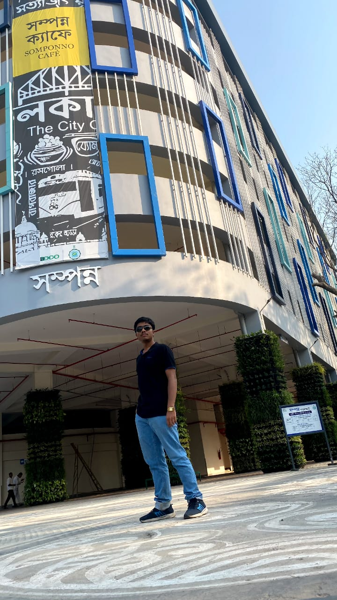

About Me
Hello reader, glad you stopped by to go through
my portfolio. So, I am a fresher persuing engineering
at IIT Kharagpur. I am passionate about maths, physics
and technology. I remember seeing a youtube video where
the demonstrator kept a mobile phone inside a metallic
container and dialled its number through another phone.
To my surprise, the phone didn't ring where as when a
plastic container was used, the phone rang immediately.
I performed the experiment myself and the results were
absolutely accurate. Then I came to know that the free
electrons in a metal rearrange in such a way that the
magnetic field is becoming zero inside it and so the
phone did not ring. I was thrilled. From this my
interest in science grew. Time passed, I studied hard
in my higher secondary and finally landed up in one of
the best engineering colleges-IIT Kharagpur. Along the
way I gained a lot of skills- time management, perseverance,
critical thinking, competitiveness, stress management.
After arriving here I learned more about programming and
my interest grew. In the pds lab, I faced challenging
problems and I started to like that brain-storming a lot.
I auditioned for many societies, got rejected but gained
a good exposure. I did get selected in the finals of Kshitij
Maths olympiad. Then, I came to know about KodeinKGP and
gave its first round selection with absolutely no knowledge
of web development. Quite unexpectedly I got selected for
the second round. From knowing nothing about web development
to creating this portfolio in just 9 days, I guess, I have
come a long way.
